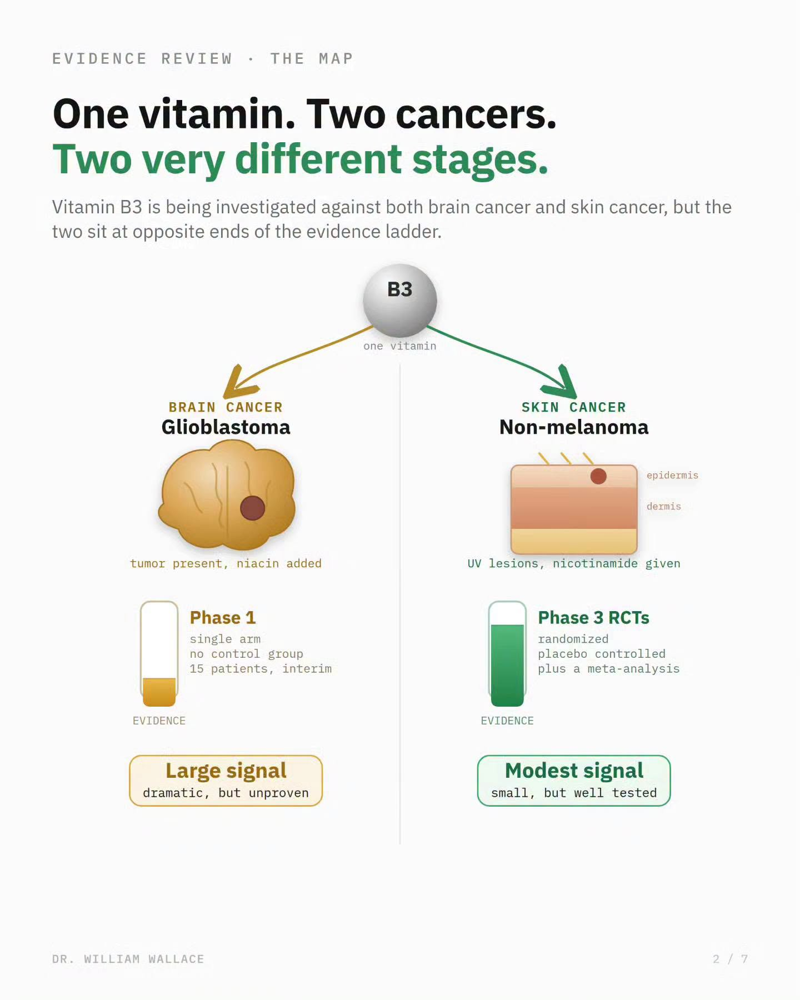
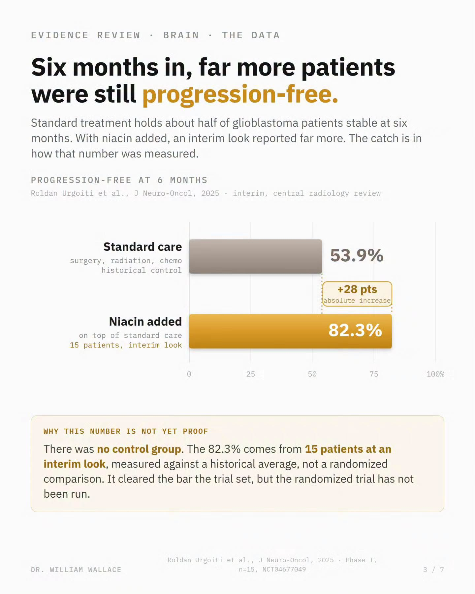
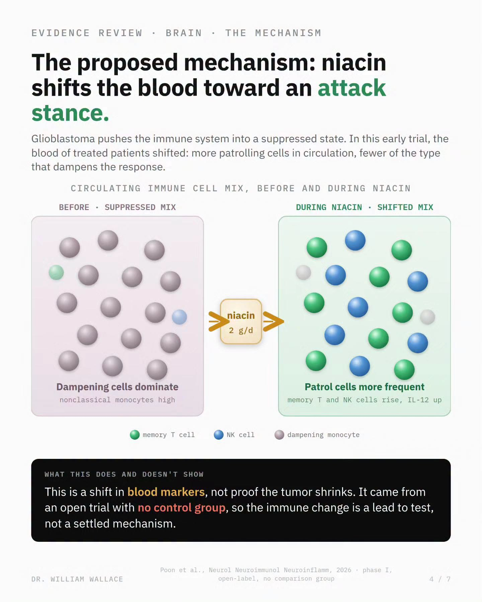
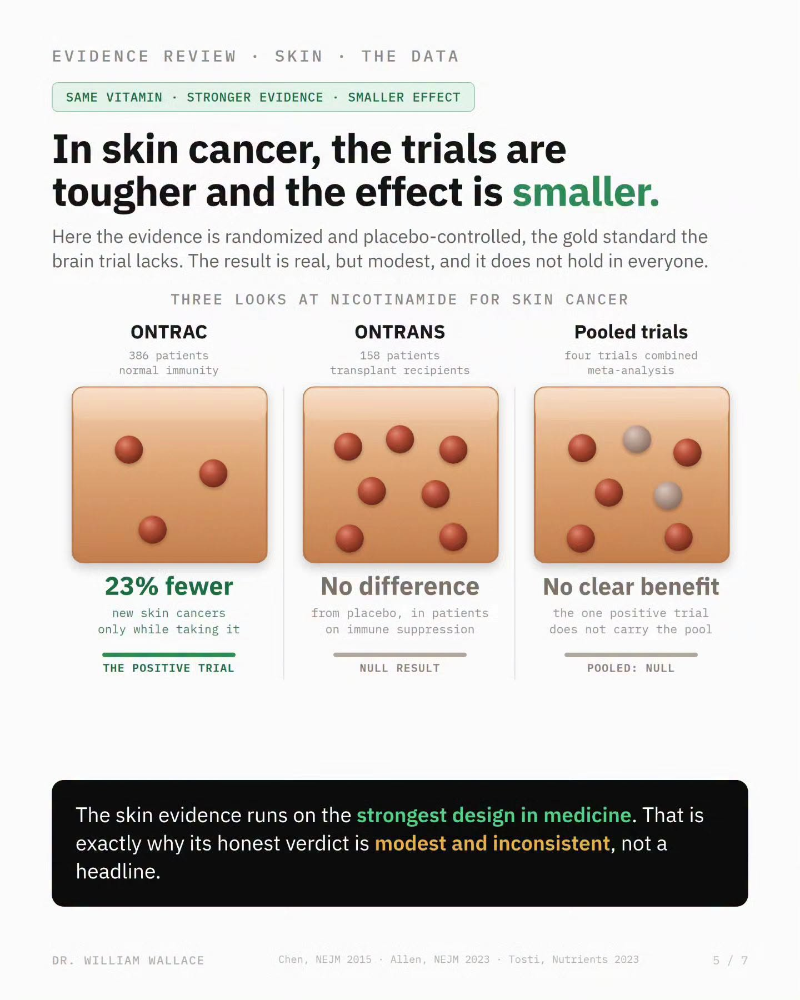

For some time now, there has been evidence from randomized trials that the niacinamide (nicotinamide) form of vitamin B3 can prevent and treat certain forms of skin cancer. This includes a well-done phase 3 trial: ↪ Nicotinamide (vitamin B3) prevented skin cancer in high-risk patients in phase 3 trials. Many dermatologists now recommend it to patients at higher risk.
Now we have trials testing the niacin (nicotinic acid) form as a treatment for brain cancer: ↪ Niacin in a small glioblastoma pilot study: long survival, but historical controls. This is the same form that has been used in the past to lower cholesterol.
In both cases, the mechanism likely involves increasing NAD. In the case of skin cancer, niacinamide/NAD increases the effectiveness of DNA repair enzymes (PARPs) used to repair DNA damaged from UV. In the case of brain cancer, niacin/NAD appears to have a rejuvenative effect on the cancer-suppressed immune system, which in turn makes it more efficient at fighting the cancer.
It’s also worth noting that niacin (nicotinic acid) has shown some potential to treat glaucoma in a small human trial: ↪ Nicotinic acid (vitamin B3) may prevent or treat glaucoma, possibly via NAD.
Both the niacin (nicotinic acid) and nicotinamide riboside (NR) forms of vitamin B3 have also shown promise in treating Parkinson’s disease in small human trials: ↪ Niacin (nicotinic acid) showed promise in a small Parkinson's trial, likely via brain NAD.
In both glaucoma and Parkinson’s, the mechanism again appears to involve NAD.
#nadHD #nicotinamideHD #vitaminb3HD
#skincancerHD #cancerHD #niacinHD #glioblastomaHD #parpsHD #immunesystemHD #glaucomaHD #parkinsonsHD #nrHD
Vitamin B3 is being tested in a clinical trial against glioblastoma, the deadliest brain cancer there is.
The same vitamin is being studied against two different cancers that sit at opposite ends of the evidence ladder. In the brain trial, 82 percent of patients were progression free at six months compared to 54 percent on standard treatment, a 28 point jump. But that figure comes from 15 patients with no control group at an interim checkpoint, measured against a historical average rather than a randomized comparison.
The proposed mechanism is plausible so far, since niacin pushed treated patients' blood toward an attack profile with more patrolling immune cells and fewer of the type that suppress the response, but a shift in blood markers is not proof that the tumor shrinks.
The evidence for skin cancer includes randomized, placebo-controlled, and replicated trials. The catch is that the effect is much smaller. One large trial found 23 percent fewer skin cancers in people with normal immune systems, but only while they kept taking it, and a parallel trial in transplant patients found nothing at all.
The mechanism is well understood, since UV light breaks DNA and the repair enzyme burns through the cell's NAD supply to fix it, which is the gap B3 fills (so real but small effect)
B3 is not a cancer treatment. It is a common vitamin being studied in two very different places, but it may have legitimate use as an adjunct treatment (time will tell)
Roldan Urgoiti et al., J Neuro-Oncol, 2025
Poon et al., Neurol Neuroimmunol Neuroinflamm, 2026
Chen et al., NEJM, 2015
Allen et al., NEJM, 2023
Tosti et al., Nutrients, 2023
De Silva et al., Int J Mol Sci, 2024




